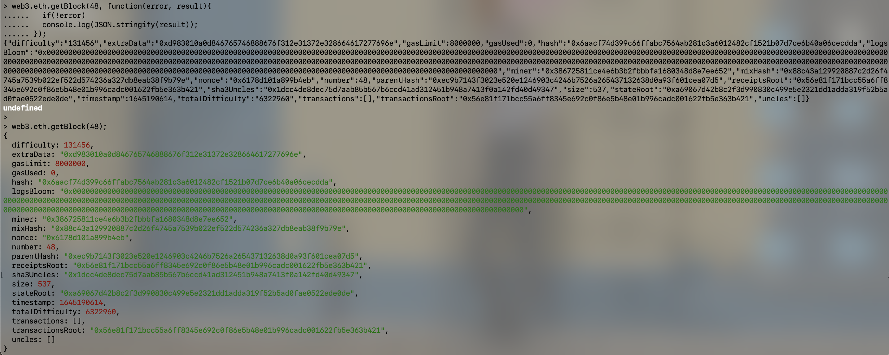
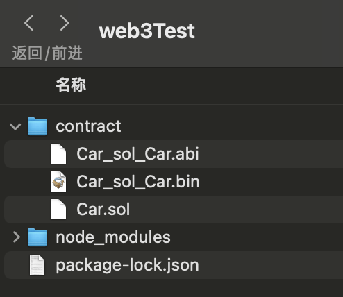

2022.2.24
web3.js API，转币脚本，监听脚本
首先需要将web3模块安装在项目中:
# 全局安装
npm install web3@0.20.1 -g
# 仅安装到这个项目中
npm install web3@0.20.1 --save-dev
为了保证我们的MetaMask设置好的provider不被覆盖掉，在引入web3之前我们一般要做当前环境检查(以v0.20.1为例):
if (typeof web3 !== 'undefined') {
web3 = new Web3(web3.currentProvider);
} else {
web3 = new Web3(new Web3.providers .HttpProvider("http://localhost:8545"));
}
web3js API 设计的最初目的，主要是为了和本地 RPC 节点共同使用，所 以默认情况下发送的是同步 HTTP 请求
如果要发送异步请求，可以在函数的最后一个参数位置上，传入一个回调函数。回调函数是可选(optioanl)的
前端开发往往会用异步而不是同步
我们一般采用的回调风格是所谓的“错误优先”，例如:
// 同步回调
web3.eth.getBlock(48);
// 异步回调
web3.eth.getBlock(48, function(error, result){
if(!error)
console.log(JSON.stringify(result));
else
console.error(error);
});

为了帮助 web3 集成到不同标准的所有类型项目中，1.0.0 版本提供了多种方式来处理异步函数。大多数的 web3 对象允许将一个回调函数作为最后一个函数参数传入，同时会返回一个 promise 用于链式函数调用。
以太坊作为一个区块链系统，一次请求具有不同的结束阶段。为了满足这样的要求，1.0.0 版本将这类函数调用的返回值包成一个“承诺事件”(promiEvent)，这是一个 promise 和 EventEmitter 的结合体。
PromiEvent 的用法就像 promise 一样，另外还加入了.on，.once 和.off方法
web3.eth.sendTransaction({from: '0x123...', data: '0x432...'})
// 检测到交易哈希
.once('transactionHash', function(hash){ ... })
// 检测到打包进块后的收据
.once('receipt', function(receipt){ ... })
// 检测到确认
.on('confirmation', function(confNumber, receipt){ ... })
// 检测到错误
.on('error', function(error){ ... })
.then(function(receipt){ // will be fired once the receipt is mined });
web3.js 通过以太坊智能合约的 json 接口(Application Binary Interface，ABI)创建一个 JavaScript 对象，用来在 js 代码中描述
函数(functions）
var batch = web3.createBatch();
batch.add(web3.eth.getBalance.request('0x0000000000000000000000000000000000000000', 'latest', callback));
batch.add(web3.eth.contract(abi).at(address).balance.request(a
ddress, callback2));
batch.execute();
JavaScript中默认的数字精度较小，所以web3.js会自动添加一个依赖库 BigNumber，专门用于大数处理
对于数值，我们应该习惯把它转换成BigNumber对象来处理
var BigNumber = require('bignumber.js');
var balance = new BigNumber('131242344353464564564574574567456');
// or var balance = web3.eth.getBalance(someAddress);
balance.plus(21).toString(10); //"131242344353464564564574574567477"
// (10)代表十进制，对于整数可以保证精度，而对于浮点数会导致精度缺失
BigNumber.toString(10)对小数只保留20位浮点精度。所以推荐的做法是，我们内部总是用 wei 来表示余额(大整数)，只有在需要显示给用户看的时候才转换为ether或其它单位
BigNumber对象内部格式：
>balance
>BigNumber { s: 1, e: 32, c: [ 13124, 23443534645645, 64574574567456 ] }
基本信息
查看 web3 版本
web3.version.apiweb3.version查看 web3 连接到的节点版本(clientVersion)
web3.version.nodeweb3.version.getNode((error,result)=>{console.log(result)})web3.eth.getNodeInfo().then(console.log)获取 network id
web3.version.networkweb3.version.getNetwork((err,res)=>{console.log(res)})web3.eth.net.getId().then(console.log)获取节点的以太坊协议版本
web3.version.ethereumweb3.version.getEthereum((err,res)=>{console.log(res)})web3.eth.getProtocolVersion().then(console.log)网络状态查询
是否有节点连接/监听，返回true/false
web3.isConnect() 或者 web3.net.listeningweb3.net.getListening((err,res)=>console.log(res))web3.eth.net.isListening().then(console.log)查看当前连接的 peer 节点
web3.net.peerCountweb3.net.getPeerCount((err,res)=>console.log(res))web3.eth.net.getPeerCount().then(console.log)Provider(重新设置连接到一个链接)
查看当前设置的 web3 provider
web3.currentProviderweb3.givenProvider设置 provider
web3.setProvider(provider)web3.setProvider(new web3.providers.HttpProvider('http://localhost:8545'))web3 通用工具方法
v1.0.0开始都放进了web3.utils
web3.fromWeiweb3.toWeiweb3.toStringweb3.toDecimalweb3.toBigNumberweb3.toHexweb3.toAsciiweb3.toUtf8web3.fromUtf8地址相关
web3.isAddressweb3.toChecksumAddressweb3.eth – 账户相关
coinbase 查询
web3.eth.coinbaseweb3.eth.getCoinbase( (err, res)=>console.log(res) )web3.eth.getCoinbase().then(console.log)账户查询
web3.eth.accountsweb3.eth.getAccounts( (err, res)=>console.log(res) )web3.eth.getAccounts().then(console.log)web3.eth – 区块相关
区块高度查询
web3.eth. blockNumberweb3.eth.getBlockNumber( callback )web3.eth.gasPriceweb3.eth.getGasPrice( callback )web3.eth.getBlock(hashStringOrBlockNumber[ ,returnTransactionObjects] )web3.eth.getBlock( hashStringOrBlockNumber, callback )块中交易数量查询
web3.eth.getBlockTransactionCount( hashStringOrBlockNumber )web3.eth.getBlockTransactionCount( hashStringOrBlockNumber, callback )web3.eth – 交易相关
余额查询
web3.eth.getBalance(addressHexString [, defaultBlock]) web3.eth.getBalance(addressHexString [, defaultBlock][, callback])交易查询
web3.eth.getTransaction(transactionHash)web3.eth.getTransaction(transactionHash [, callback])web3.eth – 交易执行相关
交易收据查询(已进块)
web3.eth.getTransactionReceipt(hashString)web3.eth.getTransactionReceipt(hashString [, callback])估计 gas 消耗量
web3.eth.estimateGas(callObject)web3.eth.estimateGas(callObject [, callback])web3.eth – 发送交易
web3.eth.sendTransaction(transactionObject [, callback])
交易对象:
web3.eth – 消息调用
web3.eth.call(callObject[,defaultBlock][,callback])
参数:
var result = web3.eth.call({ to: "0xc4abd0339eb8d57087278718986382264244252f",
data:
"0xc6888fa10000000000000000000000000000000000000000000000000000000000000003" });
console.log(result);
web3.eth – 日志过滤(事件监听)
web3.eth.filter( filterOptions [ , callback ] )
// filterString 可以是 'latest' or 'pending'
var filter = web3.eth.filter(filterString);
// 或者可以填入一个日志过滤
options var filter = web3.eth.filter(options);
// 监听日志变化
filter.watch(function(error, result){ if (!error) console.log(result); });
// 还可以用传入回调函数的方法，立刻开始监听日志
web3.eth.filter(options, function(error, result){
if (!error) console.log(result);
});
web3.eth – 合约相关 —— 创建合约
web3.eth.contract
var MyContract = web3.eth.contract(abiArray); // 通过地址初始化合约实例
var contractInstance = MyContract.at(address); // 或者部署一个新合约
var contractInstance = MyContract.new([constructorParam1][, constructorParam2], {data: '0x12345...', from: myAccount, gas: 1000000});
调用合约函数
可以通过已创建的合约实例，直接调用合约函数
// 直接调用，自动按函数类型决定用 sendTransaction 还是 call
myContractInstance.myMethod(param1 [, param2, ...] [, transactionObject] [,defaultBlock] [, callback]);
// 显式以消息调用形式 call 该函数 myContractInstance.myMethod.call(param1 [, param2, ...] [,
transactionObject] [, defaultBlock] [, callback]);
// 显式以发送交易形式调用该函数
myContractInstance.myMethod.sendTransaction(param1 [, param2, ...] [,transactionObject] [, callback]);
监听合约事件
合约的 event 类似于 filter，可以设置过滤选项来监听
var event = myContractInstance.MyEvent({valueA: 23}[, additionalFilterObject])
// 监听事件
event.watch(function(error, result){ if (!error) console.log(result); });
//还可以用传入回调函数的方法，立刻开始监听事件
var event = myContractInstance.MyEvent([{valueA: 23}][, additionalFilterObject],
function(error, result){
if (!error) console.log(result);
}
);
2022.2.21
Car.sol
pragma solidity ^0.8.0;
contract Car {
bytes brand=new bytes(12);
uint price;
constructor(string memory newBrand,uint newPrice){
brand=bytes(newBrand);
price=newPrice;
}
function setBrand(string memory newBrand) public{
brand=bytes(newBrand);
}
function getBrand() public view returns(string memory) {
return string(brand);
}
function setPrice(uint newPrice) public{
price=newPrice;
}
function getPrice() public view returns(uint) {
return price;
}
}
构建node_modules：npm install web3@0.20.1 --save-dev
编写合约：Car.sol，放在./contract目录
在./contract目录运行：solc --abi Car.sol，生成Car_sol_Car.abi（json）
在./contract目录运行：solc --bin Car.sol，生成Car_sol_Car.bin（字节码）
运行结果：

2022.2.21
kimshan@MacBook-Pro contract % node
Welcome to Node.js v12.18.3.
Type ".help" for more information.
> var Web3 = require('web3');
undefined
> Web3
[Function: Web3] {
providers: {
HttpProvider: [Function: HttpProvider],
IpcProvider: [Function: IpcProvider]
}
}
> var web3 = new Web3(new Web3.providers.HttpProvider('http://localhost:8545'))
undefined
> web3.isConnected() // 是否已经连接
true
> web3.version
{
api: '0.20.1',
node: [Getter],
getNode: [Function: get] { request: [Function: bound ] },
network: [Getter],
getNetwork: [Function: get] { request: [Function: bound ] },
ethereum: [Getter],
getEthereum: [Function: get] { request: [Function: bound ] },
whisper: [Getter],
getWhisper: [Function: get] { request: [Function: bound ] }
}
>
2022.2.22
先复制abi文件和bin文件内容
kimshan@MacBook-Pro contract % cat Car_sol_Car.abi
....
kimshan@MacBook-Pro contract % cat Car_sol_Car.bin
....
在geth里边解锁用户
> personal.unlockAccount(eth.accounts[0])
Unlock account 0x386725811ce4e6b3b2fbbbfa1680348d8e7ee652
Passphrase:
true
下面内容在node控制台操作(创建合约)
> var abi = “cat Car_sol_Car.abi”输出的内容;
> var byteCode = "0x"+“cat Car_sol_Car.bin”输出的内容;
> var carContract = web3.eth.contract(abi);
> var diployTxObject = {from:web3.eth.accounts[0],data:byteCode,gas:1000000};
undefined
> var carContractInstance = carContract.new("MyCar",1234500,diployTxObject);
undefined
> carContractInstance.address
'0x9daa31533be0de26d6ea8fc605f38d7145685347'
下面内容在node控制台操作(调用合约)
> carContractInstance.getBrand.call()
'MyCar'
> carContractInstance.getPrice.call()
BigNumber { s: 1, e: 6, c: [ 1234500 ] }
> carContractInstance.getBrand({from:web3.eth.accounts[0]})
'0x12999f1db59a614744b6b52b74f58ef503a0944fbdf4dd24725cdd216ce0bcec'
2022.2.22
var Web3 = require('web3');
var web3 = new Web3(new Web3.providers.HttpProvider('http://localhost:8545'));
var arguments_ = process.argv.splice(2);
if(!arguments_ || arguments_.length!=2){
console.log("Parameter error!");
return;
}
var _from = web3.eth.accounts[0];
//var _to = web3.eth.accounts[1];
var _to = arguments_[0];
//var _value = 10000000;
var _value = arguments_[1];
web3.eth.sendTransaction({from:_from,to:_to,value:_value},(err,res)=>{
if(err){
console.log("Error: ",err);
}else{
console.log("Result: ",res);
}
});
命令台运行记录:
kimshan@MacBook-Pro web3Test % node test.js 0xbb4e3e33b7dfd4b1c44173638546941ed1bb611e 1000000000000000000
Result: 0xe88a7967744dcc8fde46b161558c5f0c804c89cd99cee322fbf96aee46e8a593
调用子货币合约案例：sendCoin.js
Geth需要开启转账密码模式( --http.api personal )
geth --datadir ./mychain/ --networkid 15 --dev --dev.period 1 --password password.txt --http --http.api personal,eth,net,web3 console --allow-insecure-unlock 2>output.log
pragma solidity >0.4.21 <0.6.0;
contract Coin {
address public minter;
mapping (address => uint) public balances;
event Sent(address from, address to, uint amount);
constructor() public {
minter = msg.sender;
}
function mint(address receiver, uint amount) public {
require(msg.sender == minter);
balances[receiver] += amount;
}
function send(address receiver, uint amount) public {
require(amount <= balances[msg.sender]);
balances[msg.sender] -= amount;
balances[receiver] += amount;
emit Sent(msg.sender, receiver, amount);
}
}
合约部署(主要是获取合约地址):这是我的合约地址0x6341D3f5f08B945517Cb2C564E72062DB6506809
sendCoin.js
// 连接到私链
var Web3 = require('web3');
var web3 = new Web3(new Web3.providers.HttpProvider('http://localhost:8545'));
// 选择运行
var arguments_ = process.argv.splice(2);
if(!arguments_ || arguments_.length!=3){
if(arguments_.length==0){
// 直接调用脚本不出传参数>查询账户余额
just_check=true;
var _from = web3.eth.accounts[0];
}else{
// 调用方式错误
console.log('Wong Parms')
return;
}
}else{
// 转账模式
var just_check=false;
var _from = web3.eth.accounts[0];
//var _to = web3.eth.accounts[1];
var _to = arguments_[0];
//var _value = 10000000;
var _value = arguments_[1];
var _password = arguments_[2];
}
// 创建合约
const fs = require('fs');
var code = fs.readFileSync('Coin.sol').toString()
var solc = require('solc');
var compiledCode = solc.compile(code);
var abi = JSON.parse(compiledCode.contracts[':Coin'].interface);
var CoinContract = web3.eth.contract(abi);
var contractAddress = "0x6341D3f5f08B945517Cb2C564E72062DB6506809";
var contractInstance = CoinContract.at(contractAddress);
// 查看余额操作
console.log('accounts[0] balance: ',contractInstance.balances(web3.eth.accounts[0]).plus(21).toString(10));
console.log('accounts[1] balance: ',contractInstance.balances(web3.eth.accounts[1]).plus(21).toString(10));
if(just_check==true)
return
// 解锁账户
web3.personal.unlockAccount(_from,_password, (err,res)=>{
if(err){
console.log("Error: ",err);
}else{
console.log("Result: ",res);
// 进行交易
contractInstance.send(_to, _value, {from:_from},(err,res)=>{
if(err){
console.log("Error: ",err);
}else{
console.log("Result: ",res);
}
});
}
});
本地node_modules需要进行配置：
注意solc的版本需要和pragma solidity >0.4.21 <0.6.0;匹配！
kimshan@MacBook-Pro web3Test % npm install process --save-dev
kimshan@MacBook-Pro web3Test % npm install solc@0.4.22 --save-dev
kimshan@MacBook-Pro web3Test % npm install web3 --save-dev
kimshan@MacBook-Pro web3Test % node test.js wrong
Wong Parms
kimshan@MacBook-Pro web3Test % node test.js 0xbb4e3e33b7dfd4b1c44173638546941ed1bb611e 10 111111
accounts[0] balance: 211
accounts[1] balance: 131
Result: true
Result: 0x9b5fa7f7562d5f7ecf051b12e1ed3d8db01808fb04b90f966dd7f5a1ef24be88
kimshan@MacBook-Pro web3Test % node test.js
accounts[0] balance: 201
accounts[1] balance: 141
监听的脚本
test2.js
var Web3 = require('web3');
var web3 = new Web3(new Web3.providers.HttpProvider('http://localhost:8545'));
const fs = require('fs');
var code = fs.readFileSync('Coin.sol').toString()
var solc = require('solc');
var compiledCode = solc.compile(code);
var abi = JSON.parse(compiledCode.contracts[':Coin'].interface);
var CoinContract = web3.eth.contract(abi);
var contractAddress = "0x6341D3f5f08B945517Cb2C564E72062DB6506809";
var contractInstance = CoinContract.at(contractAddress);
contractInstance.Sent("latest",(err,res)=>{
if(err){
console.log("Error: ",err);
}else{
console.log("Sent Event occurs: ",res);
}
});
终端调用:先运行test2.js, 然后发起test.js脚本定义的转账, 出块后事件会被监听到
其中的args参数，是event规定的参数。
kimshan@MacBook-Pro web3Test % node test2.js
Sent Event occurs: {
address: '0x6341d3f5f08b945517cb2c564e72062db6506809',
blockNumber: 823,
transactionHash: '0x4fb3f803587fbdd778a7e2917307f8f53971a5699346b509b52f3fd216ce4156',
transactionIndex: 0,
blockHash: '0xdc1300412c9136ab1e9a9f60e20f52a38584cdbf0cca546dbb890f9b45701bab',
logIndex: 0,
removed: false,
event: 'Sent',
args: {
from: '0x75ff5f62085e14713fffa2e13a1b8ddd455a1ec3',
to: '0xbb4e3e33b7dfd4b1c44173638546941ed1bb611e',
amount: BigNumber { s: 1, e: 1, c: [Array] }
}
}